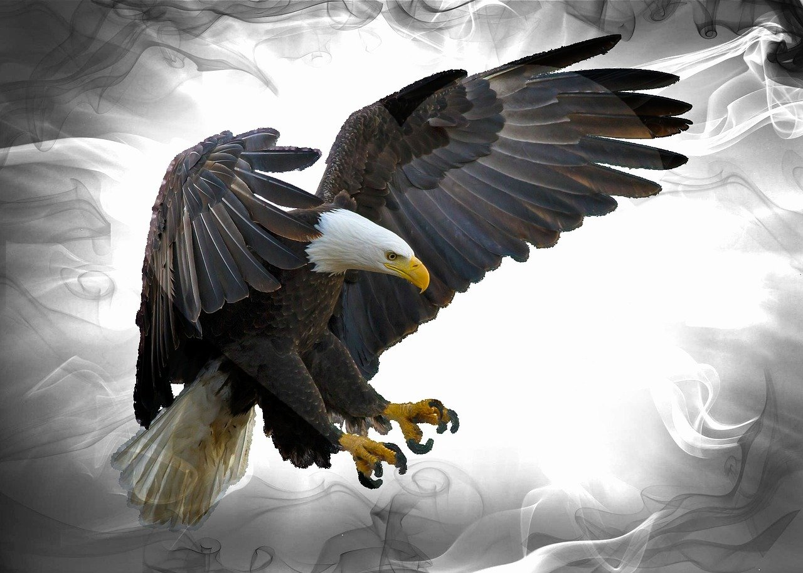
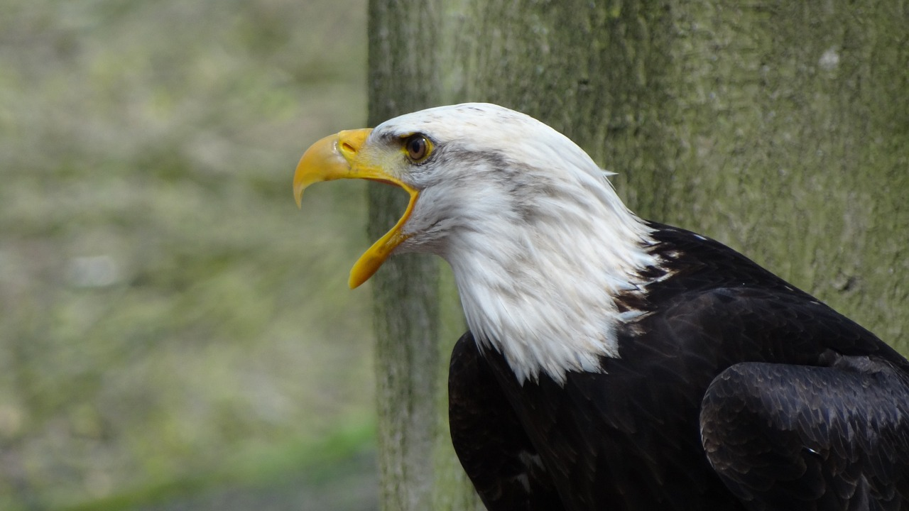
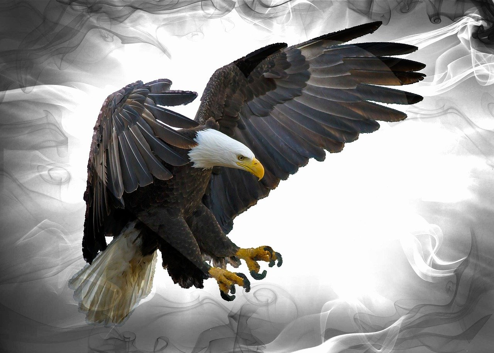
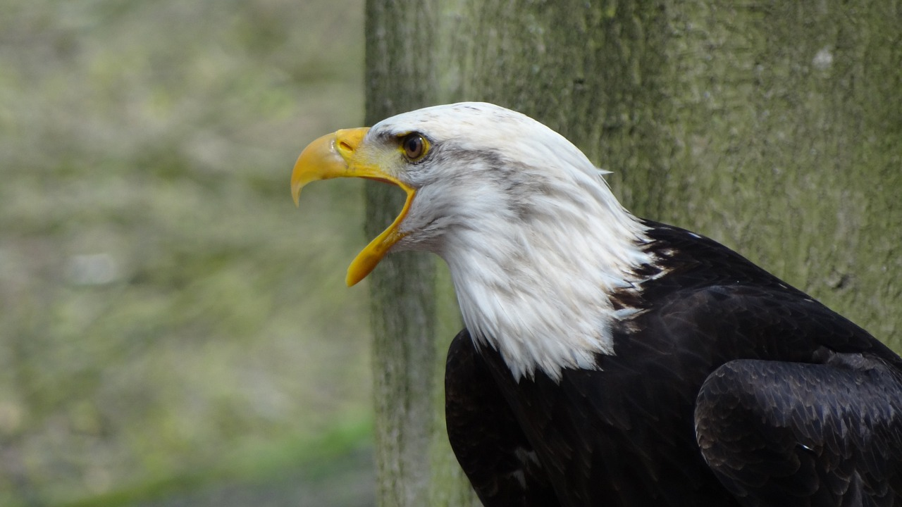
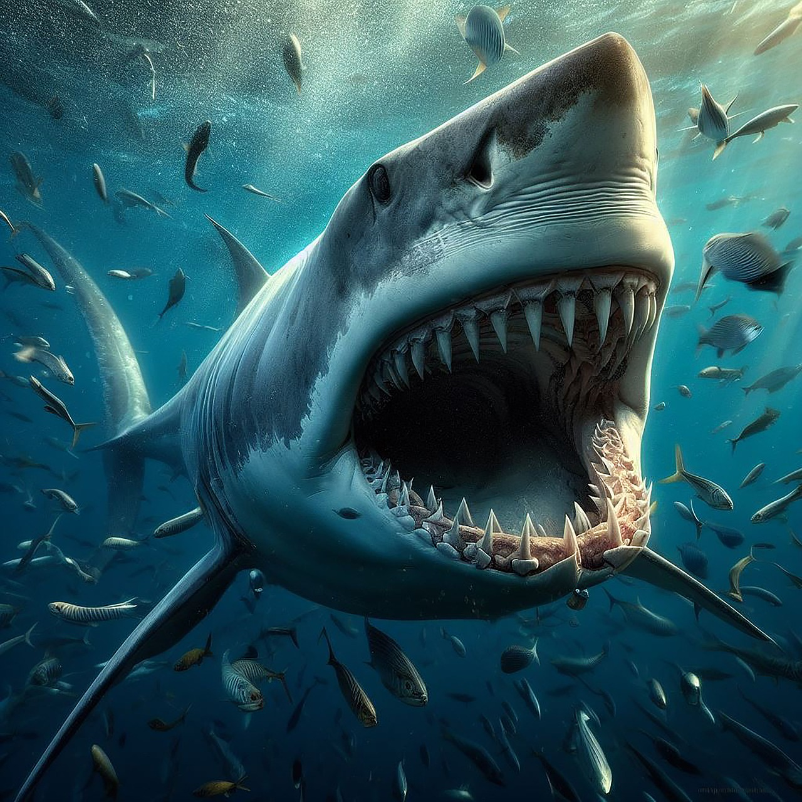
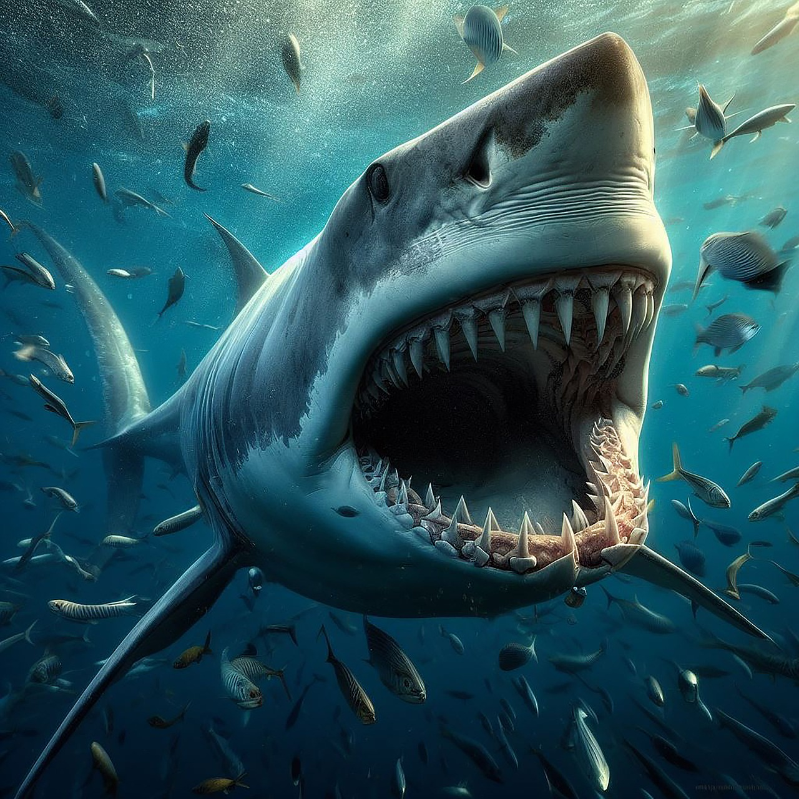

O leão é um mamífero pertencente à ordem Carnivora e família Felidae, sendo conhecido como “rei das selvas”. Ele se alimenta de outros animais, como gnus e zebras, e vive em grupos, que apresentam divisões bem marcadas, sendo o macho responsável pela defesa do grupo e a fêmea pela caça e cuidado com os filhotes.
Apesar de serem admirados por sua força, atualmente as populações de leões estão em declínio, sendo a espécie classificada como vulnerável pela IUCN (sigla em inglês para União Internacional para a Conservação da Natureza). Os leões costumam ser divididos em subpopulações asiáticas e subpopulações africanas.

Águia é o nome comum dado às aves de rapina de grande porte pertencentes às famílias Accipitridae e Pandionidae. Como a grande maioria dos rapinantes, têm boa envergadura das asas, bico curvo e garras bem afiadas para matar e capturar suas presas. São predadoras ativas e se utilizam principalmente da visão extremamente apurada para detectar seu alimento (geralmente pequenos vertebrados e insetos). O grupo das águias compreende cerca de 70 espécies com ampla distribuição, sendo que oito delas ocorrem em território brasileiro. As águias brasileiras podem ser divididas em quatro subgrupos:
  
  O tubarão é um animal vertebrado da classe dos Chondrichthyes, ou seja, ele é um peixe cartilaginoso, e da subclasse Elasmobranchii. Dentre as principais caraterísticas, podemos destacar a presença de um esqueleto cartilaginoso com deposição de cálcio e o fato de serem carnívoros, ocupando os níveis superiores das cadeias alimentares dos ambientes marinhos.
Os tubarões habitam os mais diversos ambientes oceânicos, desde a costa a grandes profundidades e diferentes temperaturas.

 
